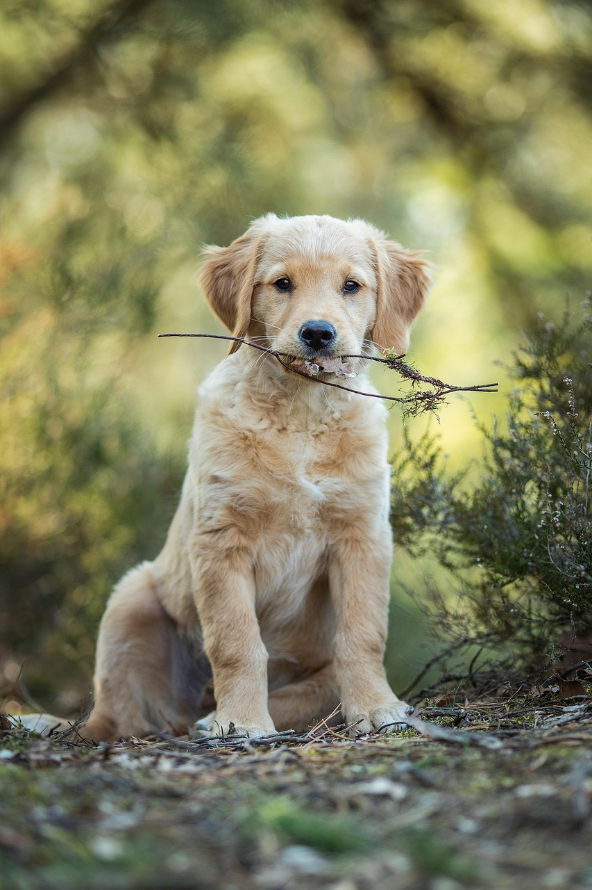

一、饮食管理
各阶段喂食参考
| 年龄段 | 每日餐数 | 每日食量（参考） | 注意事项 |
|---|---|---|---|
| 2-4月龄 | 4次/天 | 80-150g/餐 | 幼犬粮温水泡软，少量多餐 |
| 4-8月龄 | 3次/天 | 150-250g/餐 | 逐渐过渡到干粮，补钙 |
| 8月-1.5岁 | 2次/天 | 250-350g/餐 | 成长期注意蛋白质摄入 |
| 1.5-7岁 | 2次/天 | 300-400g/餐 | 控制体重，避免肥胖 |
| 7岁以上 | 2次/天 | 250-350g/餐 | 切换老年粮，低脂易消化 |
✅ 推荐食物
- 优质天然狗粮（无谷配方更佳）
- 煮熟的鸡胸肉、牛肉、鱼肉
- 胡萝卜、西兰花、南瓜等蔬菜
- 苹果、蓝莓等适量水果
- 鸡蛋黄（每周2-3个）
❌ 禁止食物
- 巧克力、葡萄、葡萄干
- 洋葱、大蒜、韭菜
- 牛油果、夏威夷果
- 含盐含糖的加工食品
- 禽类骨头（易碎伤肠胃）
二、日常美容护理
梳理毛发
频率：每天1次
使用针梳或排梳顺着毛发生长方向梳理，重点清理耳后、腋下、腹部等易打结部位。
洗澡
频率：夏季2-3周/次，冬季1-2月/次
使用宠物专用沐浴露，水温37-39℃，洗后彻底吹干，尤其注意毛发根部。
修剪指甲
频率：每2-4周1次
使用宠物指甲剪，注意避开血线，剪后可磨圆边缘。
清洁耳朵
频率：每周1-2次
金毛垂耳易积聚污垢，需用宠物洁耳液清洁。如发现异味、红肿应及时就医。
口腔护理
频率：每天1次（理想）
使用宠物牙膏和牙刷，配合洁牙零食和漱口水。每1-2年进行一次专业洁牙。
眼部护理
频率：每天检查
用温水浸湿的棉片轻擦眼部分泌物，金毛容易出现泪痕，注意饮食清淡。
三、基础训练
🟢 幼犬期（2-6月）— 社会化训练
- 让幼犬接触不同年龄、外貌的人类
- 接触友善健康的其他狗狗
- 适应各种环境：街道、公园、车辆
- 基础指令：坐、趴、握手、等待
🔵 青少年期（6-18月）— 服从训练
- 巩固基础指令，增加距离和干扰训练
- 学习"过来"召回指令（非常重要）
- 纠正扑人、乱捡食物等不良习惯
- 牵引绳随行训练
🟣 成年期（1.5岁+）— 进阶训练
- 可学习高级技能：接飞盘、跨越障碍
- 参加敏捷、服从等犬类运动
- 可进行搜救、导盲等专业工作训练
- 持续进行"充电"训练保持熟练度
四、居住环境
🏠 居住空间
金毛属于中型偏大犬，需要一定的活动空间。公寓可养但需保证每日运动时间，带院子的独栋住宅是理想选择。
🌡️ 温度适应
金毛双层被毛耐寒性较好，但不耐高温。夏季室内需保持通风凉爽，避免在正午高温时段外出。
🧹 家居布置
金毛掉毛严重，建议使用易清洁的地板材质。电线、尖锐物品、有毒植物需收好，防止幼犬啃咬造成危险。